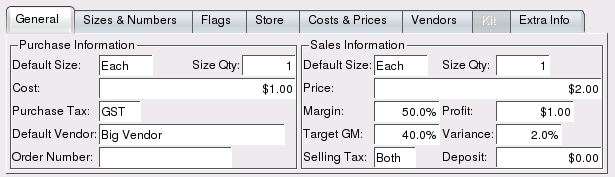
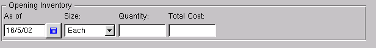

| Table of Contents | Quasar Commands | Up: Inventory | Previous: Item List | Next: Item Margin |
Using this screen you can create an item with a single size, cost and price, or you can identify multiple sizes, costs and prices. You can link multiple lookup numbers to an item, link specific customers to a price, specific vendors to a cost or even create kits made out of other items. You can enter a container deposit, taxes and specify if a cost or price includes tax and/or container deposit.
The speed in which new items are created can be substantially sped up by first entering sub-departments containing default data. Sub-departments are created in the sub-department master window. New items may be defined as items that will be sold, items that will be purchased, items that will be inventoried, or any combination of all three. Following is a list of all attributes in the item master window:
The price lookup id for the item.
The description of the item.
The item may be linked to a sub-department. When entering a sub-department in a new item, the sub-department defaults will be brought forward and set in the item. Utilization of sub-departments can substantially speed up item entry.
Defines if an item is purchased, sold and inventoried or any combination of the three. The accounts required will be displayed dependent on the combination selected. In Quasar you can create these types of accounts.
Toggle on or off. Toggle on if the item will be purchased through Quasar's purchasing and receiving functions.
Toggle on or off. Toggle on if the item will be sold through Quasar's sales functions.
Toggle on or off. Toggle on if the item will be inventoried through Quasar's inventory functions.
Toggle on or off if the item is purchased, sold and inventoried. Toggle on if you will want Quasar to calculate the COGS(cost of goods sold) and the asset reduction, using the target margin, when the item is sold. Toggle off if the COGS and asset reduction will be calculated from the average cost of the item.
Defines the account the item is to be expensed to when it is purchased. The expense account is required for:
Defines the cost of goods sold account that will be posted to when the item is sold. The cost of goods sold account is required for:
Defines the income account that will be posted to when an item is sold. The income account is required for all items that are sold.
Defines the asset account the will be posted to when an item is purchased, added to inventory using the item adjustment window or sold. The asset account is required for all items that are inventoried.
Item groups are used to link an item to a price. The purpose is to provide the ability to assign a price to multiple items at the same time by linking a price to a group.
Enter the name of the group(s) that will link the item to a price. An item may be linked to multiple item groups.
The current store in which you are working with the item.
The location of the item in the current store.
The minimum on hand quantity. When using the auto order function, orders will be generated for all items whose on hand levels drop below the minimum quantity.
The maximum stock quantity. When using the auto order function, orders will be generated to bring the on hand levels up to the maximum quantity. Note, that case ordering may bring the on hand quantity higher than the max level.
By setting an item to discontinued, it can be sold and inventoried, but Quasar will no longer allow you to purchase the item. Use this flag for items that will be phased out of your stock selection.
Toggle on or off. Toggle on if the item is stocked. If the item is not stocked it will not display on the item lists for this store.
Quasar displays the current stock on hand level.
Quasar displays the current stock on order level.
The general folder contains the general purchasing and selling
information for an item. More advanced functions can be found in the
additional folders.

Purchase information is only required for items that are purchased.
Sales information is only required for items that are sold.
Use the sizes table to define one or more sizes for an item and to link the "size quantity" and "weight" to each size. The weight is used for calculating the landed cost of an item. Note - you must be consistant with the units of measure used. For example, if you use kilograms for one item then use kilograms for all items. In addition
Use the numbers table to define one or item numbers that are linked to an item. Also use the numbers table to link a specific size to an item number. If no specific size is linked to an item number, then Quasar will use the default sizes specified in the general folder.
Use the flag file to define miscellaneous options for the item
Use the store file to define item information as it relates to each store.
Use the costs and prices folder to set the cost and selling price for items that have multiple sizes.
Use the vendors folder to link a specific order number to a vendor.
The kit folder provides the mechanism to define a kit. A kit
is an item created from other items. For example, you may use several
items(components) to build a bicycle. Once you have defined a kit you can build them using the "Build" button.
The build quantity defines the number of kits that can be built with the items listed in the table. For example, if you could build two widget kits with the items(components) listed in the table, then the build quantity would be "2".
Quasar calculates the total cost of all items entered in your build list.
The build table is used to define:
The extra info folder provides the mechanism to define special attributes required by a company. While Quasar contains most of the inventory attributes common to the majority of businesses, many people require the ability to define their own special attributes.

Create an extra data attribute to track information by item. When an extra attribute is created, this attribute is created for every item.
Use extreme CAUTION when deleting a data name. The deletion of the name deletes the corresponding data value for every item in your database.
Use the rename data button to rename a special attribute. A data name may be renamed without deleting the data value for each item.
The opening inventory attributes can only be entered at the time a
new item is created. Entry, creates an item adjustment journal, posting
to the inventory asset account with the offsetting entry to the historical
balance account. A historical balance account must be defined in order
to utilize this feature.

The date the inventory was on hand as of.
The current on hand level of an item. This is an enter once only attribute and may only be entered when the item is first being setup. Caution should be taken to ensure accuracy. Any adjustments to on hands after the initial setup of the item must be done in the item adjustment window.
The total cost of the on hand inventory for the item. This is an enter once only attribute and may only be entered when the item is first being setup. Caution should be taken to ensure accuracy. Any adjustments to the total value after the initial setup of an item must be done in the item adjustment window.
Toggle on or off. Toggle on to set the item to inactive. Inactive items may not be purchased or sold. Items with an on order or on hand quantity may not be set to inactive. Toggle off to re-set the item to active.
Click on the "Prices" button to display the price list. From the price list you can create or edit the item prices.
Click on the "Costs" button to display the cost list. From the cost list you can create or edit the item costs.
Click on the "Margin" button to display the item margin screen. The item margin screen is used to change the prices of the item based on the replacement cost, the average cost or the last landed cost.
Click on the "Stock" button to display the stock status for an item.
Click on the "Build" button to build one or more kits. Specify the component multiples. For example if the components listed in the build table created 3 kits, building 3 multiples of the components will create 9 kits. The build process creates an item adjustment which reduces the inventory of the components and increases the inventory of the kit.
| Table of Contents | Quasar Commands | Up: Inventory | Previous: Item List | Next: Item Margin |